| 상품 | 군마트 | 쿠팡 | 차이 | |
|---|---|---|---|---|
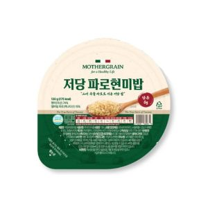 | 네이처라우드 마더그레인 저당파로현미밥 130g | 1,500원 | 2,417원 | -38% |
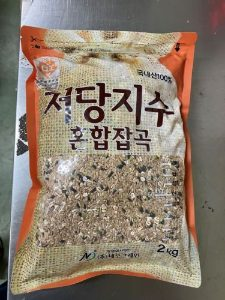 | 농업법인 네오그레인 저당지수혼합잡곡식습관개선 2kg | 10,900원 | 17,500원 | -38% |
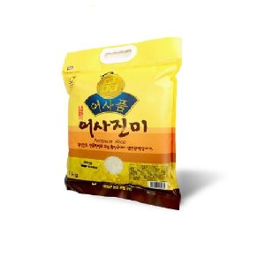 | 횡성어사품조합공동법인 횡성쌀어사진미4kg | 16,520원 | 25,900원 | -36% |
| 일팔구삼 도달미 10kg | 38,050원 | 59,480원 | -36% | |
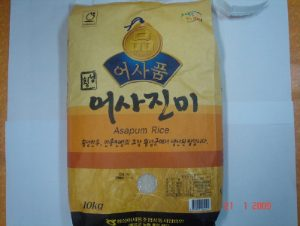 | 동횡성농업협동조합 횡성쌀어사진미10Kg | 33,980원 | 48,900원 | -30% |
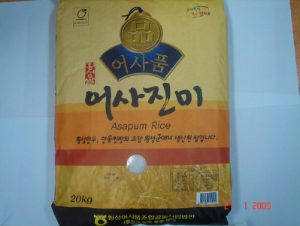 | 동횡성농업협동조합 횡성쌀어사진미20Kg | 63,830원 | 88,900원 | -28% |
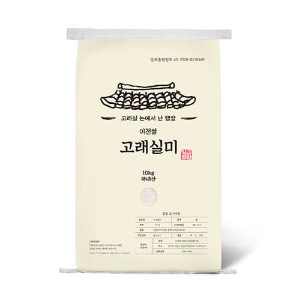 | 일팔구삼 고래실미 쌀 10kg | 43,290원 | 59,480원 | -27% |
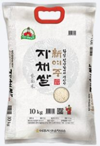 | 마을정미소 대왕님표 자채쌀 10KG | 46,380원 | 59,500원 | -22% |
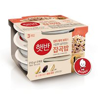 | 씨제이제일제당 잡곡밥 210g×3개입 | 3,110원 | 3,780원 | -18% |
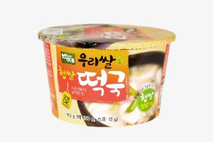 | 햅쌀 떡국 163 g | 1,950원 | 2,212원 | -12% |
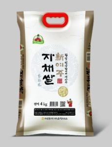 | 마을정미소 신여주 자채쌀 4kg | 22,420원 | 23,800원 | -6% |
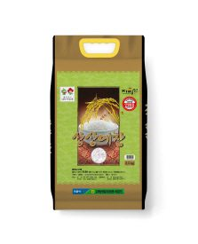 | 김제농협쌀조합공동사업 상상예찬 3.5kg | 12,960원 | 13,475원 | -4% |
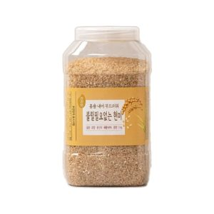 | 월드그린 불릴필요없는칼집현미2kg | 7,350원 | 7,400원 | -1% |
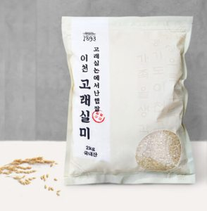 | 일팔구삼 고래실미 쌀 2kg | 8,760원 | 8,780원 | +0% |
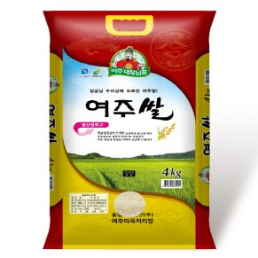 | 여주쌀 4kg | 25,800원 | 24,900원 | +4% |
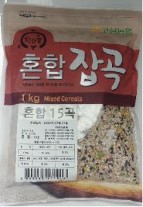 | 고삼농협15곡혼합잡곡 1kg | 8,230원 | 7,750원 | +6% |
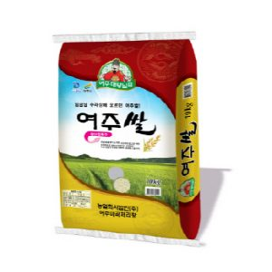 | 여주쌀 10kg | 51,580원 | 47,900원 | +8% |
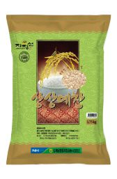 | 김제농협쌀조합공동사업 상상예찬 1.75kg | 7,380원 | 6,738원 | +10% |
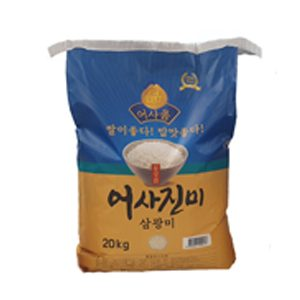 | 횡성어사품조합공동법인 횡성쌀 어사진미 삼광미 20kg | 67,070원 | 59,990원 | +12% |
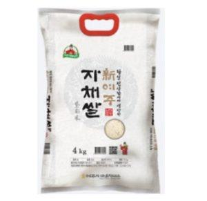 | 마을정미소 신여주 자채쌀 4kg | 27,460원 | 23,800원 | +15% |
쌀·곡물 말고 다른 것도
더 이상 직접 비교하지 마세요.
군마트 상품을 한곳에 모아 PX 가격과 온라인 가격을 쉽게 비교할 수 있습니다.
이게 실제 화면이에요. 상품을 누르면 바로 열립니다.
국방가족 분들이 조금이라도 편하게 군마트를 이용하셨으면 하는 마음으로 만들었습니다.
국방가족을 위한 작은 재능기부입니다.